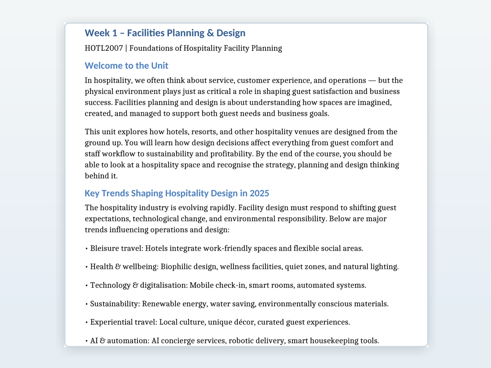

Learning Design
Designing structured, purposeful learning experiences that move learners from concept introduction to applied practice, reflection and assessment readiness.
Learning and Design Portfolio
I design practical, evidence-informed learning experiences across higher education, vocational education and workforce capability. My work combines curriculum design, authentic assessment, active learning, digital tools and responsible use of AI.
A concise view of professional capability areas relevant across higher education, vocational education and workforce learning. The emphasis is on design judgement, learner experience and evidence of practice rather than self-rated scores.
Designing structured, purposeful learning experiences that move learners from concept introduction to applied practice, reflection and assessment readiness.
Mapping outcomes, activities, assessment tasks and rubrics so learners can see the relationship between what they study, what they practise and how they are evaluated.
Using simulations, scenario-based learning, digital resources and interactive tasks to support authentic decision-making and workplace transfer.
Constructing and maintaining organised learning environments, including module structure, resources, activity flow, accessibility checks and learner-facing navigation.
Applying AI and analytics thoughtfully to research, design iteration, content development, evaluation and workflow improvement, with human judgement retained at key decision points.
Each case study summarises context, design approach and selected evidence while avoiding publication of full proprietary resources. Screenshots and sample design notes are used as excerpts only.

A higher education learning design example focused on helping students connect facilities planning, commercial feasibility and operational design decisions. The design approach emphasised scaffolded learning, collaborative analysis, industry context and activities that prepared students to apply concepts rather than only recall them.
An experiential learning design example where learners practise operational decision-making in a simulated hotel environment. The learning experience supports decisions around pricing, staffing, maintenance, marketing and service quality, then encourages reflection on how those decisions affect performance and guest outcomes.

A regulated learning design example focused on translating legal, ethical and harm-minimisation obligations into learner-facing content. The design task was to make compliance expectations clear and practical while supporting real-world judgement in hospitality and gambling environments.

A workforce capability example focused on translating technical requirements into structured workshop learning. The design approach centres on role clarity, applied examples, guided practice and quality assurance thinking so participants can connect technical obligations to defensible workplace decisions.
This section presents AI and analytics as demonstrated capability and professional practice across research, design support, evaluation and responsible learning innovation.
I use AI and data-informed approaches to support research, learning design, content development, evaluation and workflow improvement. My approach focuses on responsible use, human oversight, critical evaluation of outputs and appropriate integration of AI into authentic learning and workplace capability.
Selected excerpts show the nature of the work without publishing complete proprietary documents. This keeps the portfolio credible, ethical and easier for education and workforce-learning audiences to scan.

Use of text, image, video prompts and practical explanations to support engagement and comprehension.

Plain-language explanation of technical and regulated concepts while maintaining accuracy and workplace relevance.

Structured mapping of legislation, standards and learning implications into usable design and quality assurance artefacts.
About and contact
My work sits at the intersection of curriculum design, assessment, digital learning, compliance-aware resource development and emerging AI capability. I am especially interested in learning experiences that help adults make better decisions in authentic professional contexts.
More detailed artefacts, references and confidential examples are available on request where sharing is appropriate and permissions allow.